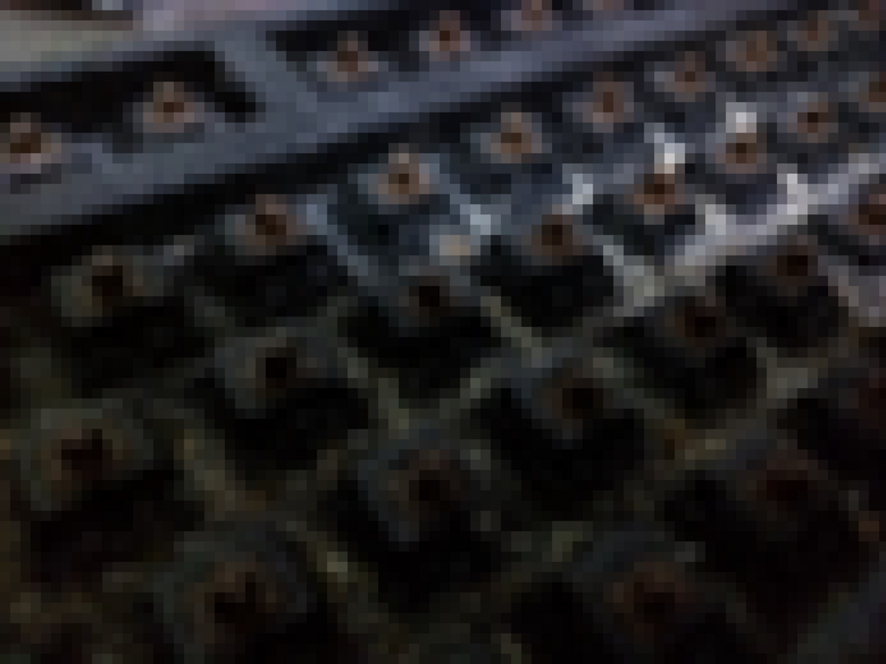

真夜中にキーボードの掃除をしたくなる病
公開日：

自分で言うのもなんだけど、学校の掃除なんかは割と真面目にやる方だった。学校の掃除は、生徒の公共心を観察するのにとてもよい場だと思う。自分が思うに、学校の掃除をサボらないヤツは信頼できる。とくに先生の監視がなくても掃除するヤツはそうだ（ただ、自分が真面目にやっているからと言って、他人にそれを強制するタイプはあまりよくない）。逆に、言われなきゃやらないヤツに頼り過ぎてはいけない。囚人のジレンマ的な状況に陥ったとき、ほぼ確実に裏切るタイプだ。
とはいえ、学校の掃除を真面目にやるからと言って、自分の部屋がキレイかといえば、それはまた別の話。
そもそも自分はあまり掃除が好きではない。みんなで利用するパブリックな場所は整理されている方が好ましいが、プライベートではむしろカオスを愛する。床にそびえ立つ本の塔から、自分が読みたい本をうまく引き抜けた時の快感。朝起きて部屋に埋もれたメガネを探す旅にでるときのワクワク感。そういうのが、日々の生活を豊かにしてくれるのである。
それでも A 型の血が騒ぐのか（よく O 型だろうと言われるのだけど、自分は歴とした A 型である。血液型占いというのがいかにウソくさいかがよく分かる）、時折、真夜中に便器磨きをやりたくなったりする。「あかんこれ」と感じた瞬間、バチンと心のスイッチが入るのを感じる。「汚物は消毒だぜ！！」そしてピカピカになった便器で用を足し、満足に満たされながら眠りにつくのである。
――前置きが長くなったけど、そんな感じのノリで昨晩はキーボードの掃除をしてみた。
ウチのキーボードは FILCO のメカニカルキーボード。

FILCO Majestouch「マジェスタッチ」 メカニカルキーボードUSB&PS2両対応 英語104キー 独CherryMX茶軸スイッチ ブラック FKB104M/EB
- 出版社/メーカー: ダイヤテック
- 発売日: 2006/02/24
- メディア: Personal Computers
- 購入: 1人 クリック: 5回
- この商品を含むブログ (6件) を見る
もう五年以上使っているけれど（覚えてない……今は絶版らしい）、まったくへたりがなく、とてもいいキーボード。かな印字のない見た目がシンプルな英語配列で、スペースキーとエンターキーが横に長いのが気に入っている。

- 出版社/メーカー: ダイヤテック
- メディア: Personal Computers
- 購入: 55人 クリック: 67回
- この商品を含むブログ (5件) を見る
キートップの引き抜きには、専用の工具があるとよい。Amazon で500円ぐらい。キートップを挟むようにして差し込んで、クイッと引けば、ポポポポーン！ だ。ただし、一部のちょっと大きめのキーはなんか金具が入っているので抜かない方がいい。抜いて抜けないことはないみたいだけど、壊したら面倒なので。
キートップを抜くと、そこには腐海が広がっていた。
ポテチのカスっぽいもの、髪の毛、なぜか爪の破片（よく机で爪を切るからであろう）……そういうものが堆積して、こびりついている。半分泣きながら、濡れティッシュと綿棒と爪楊枝と、そのたもろもろの道具でこそげ落とし、きれいに拭いていく。

キートップもキレイに拭いて、元の場所にハメる。［O］キーがやたらべたべたしていたのだけど、おそらくビールか何かをぶっかけた影響だろう。割と酷使してるのに、よくもまぁ、壊れないキーボードだと思う。
キートップを元の位置にハメる作業は、思った以上に難航した。とくに記号のあたりやテンキーのあたりは多少記憶があやふやだったようで、いろいろ間違った。「？」出そうとしてんのに、なぜか「＜」とか出てくる。あらかじめ配列を写真を撮っておけばよかったかも。キートップは段ごとに高さが違うので、それは間違えなかった。指で触ると明らかに違和感がある。
ちょっとだけキレイになったので、あと数年程度は頑張ってほしいと思う。